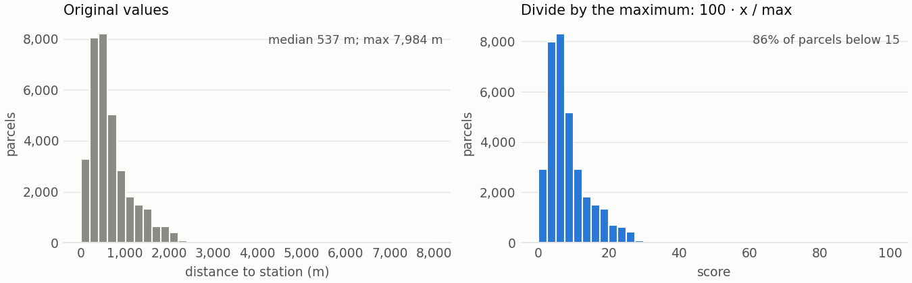
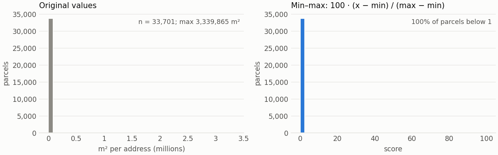
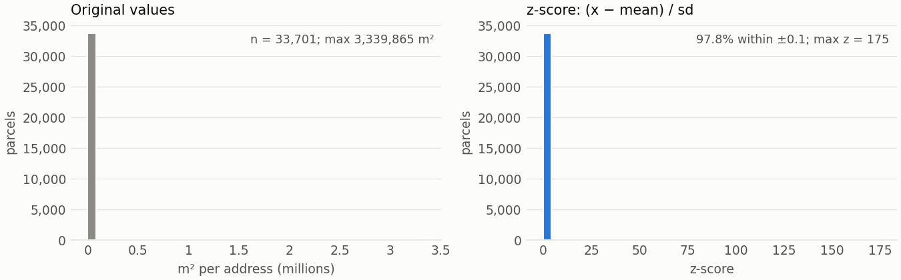
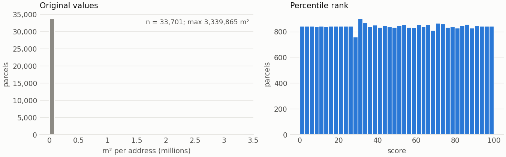
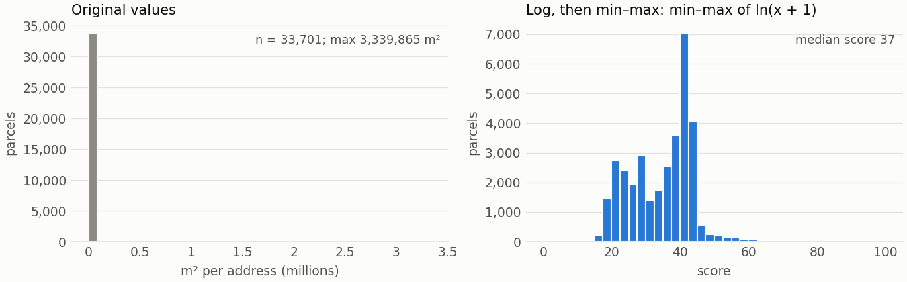
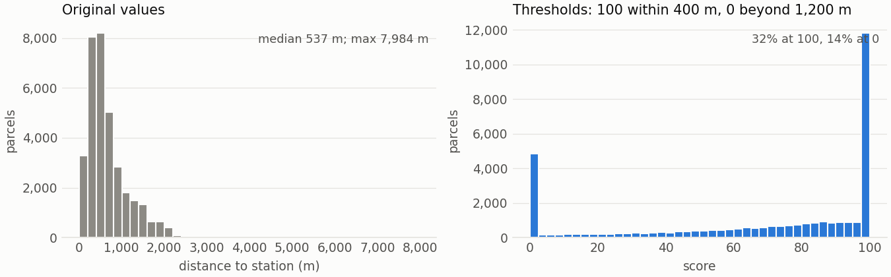
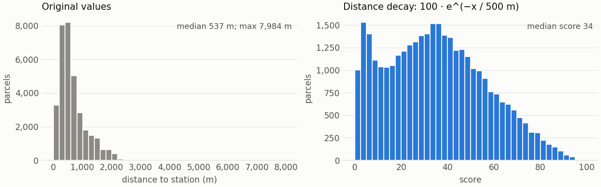
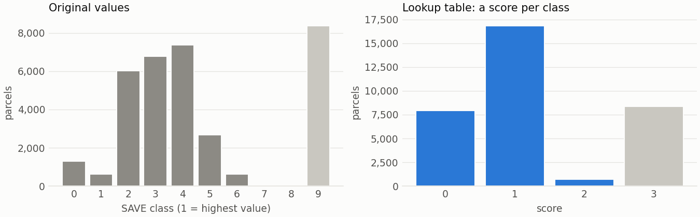
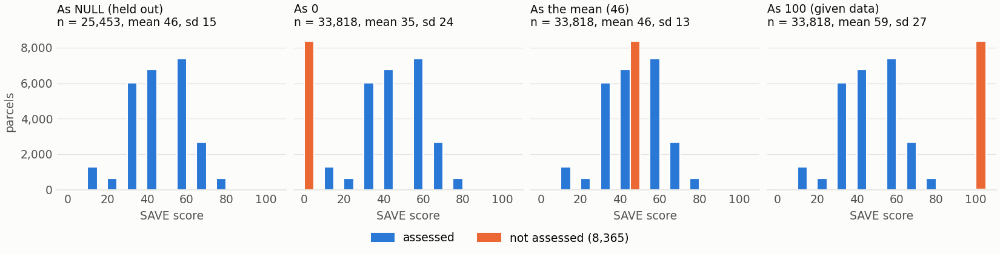

Implementation: Scoring criteria (Recipe - QGIS).
Scoring criteria is the Task of turning the raw values of a criterion (a distance, an area per address, a heritage class) into a score on a common scale, so that it can be combined with other criteria in a suitability index or a multi-criteria analysis. The score says how good a unit is on this one criterion: by convention 0 is worst and 100 best. The way a score is calculated is as much a decision as the weight it gets later.
Used in: Multi-criteria suitability (Task). Examples: Densification priorities in Copenhagen by multi-criteria analysis (Example).
Task Schema (tool-agnostic)
- Say what the criterion stands for — and which direction is good: near a station is good, near a motorway is bad. Note its level of measurement: nominal, ordinal, interval or ratio.
- Audit the raw values — their distribution: empty values, zeros, extreme values, codes that mean “unknown” (−1, 0, 9999). Look at the units behind the extremes before deciding what to do with them.
- Decide what is held out (decision point) — the units for which the criterion has no meaning, or no known value, get NULL (see below).
- Choose the scoring function (decision point; Operator: rescale) — from the table below, by what the criterion means and how its values are distributed.
- Set the direction — so that 100 is always good: reverse a score where high raw values are bad (100 − score), or let a negative weight do it later. Do one or the other, and write down which.
- Check the scores — their distribution after scoring: the median, the spread, and how many units share the same score. A score where almost every unit is near 0, or where a quarter of the units share the maximum, will not do what its weight says.
Output: a score field per criterion, 0–100 (or z-scores), with NULL for held-out units, and a note of the function, its parameters and the direction.
Ways of calculating a score
| Function | Score | Suits | Watch out |
|---|---|---|---|
| Divide by the maximum | 100 · x / max | ratio values that start at 0 and have no outliers | one extreme value squeezes all others towards 0 |
| Min–max | 100 · (x − min) / (max − min) | interval and ratio values without outliers | as above, at both ends |
| z-score | (x − mean) / standard deviation | interval and ratio values, roughly symmetric | not 0–100; outliers stay outliers (a z of 175 outweighs everything) |
| Percentile rank | the share of units with a lower value, 0–100 | skewed values; ordinal values | the distances between values are lost; many equal values share one rank |
| Log, then min–max | min–max of log(x + 1) | ratio values with a long right tail (areas, counts, incomes) | log(0) is undefined, hence the + 1; the result is harder to explain |
| Thresholds (linear between) | 100 up to a, 0 beyond b, linear between | criteria with a known good and bad range: 100 within 400 m of a station, 0 beyond 1,200 m | a and b are choices to justify, e.g. from a plan or a walking-distance study |
| Distance decay | 100 · e^(−x / d) | accessibility, where each extra metre matters less | the decay distance d is a choice; the score never reaches 0 |
| Lookup table | a score per class | nominal and ordinal criteria (land use, SAVE classes, soil types) | the scores of the classes are judgements; write them in a table |
The thresholds and lookup functions put knowledge of the domain into the score: what counts as near, what a class is worth. The statistical functions (min–max, z-score, percentile rank) only use the distribution of the data at hand, so the same parcel gets another score if the study area changes.
What each function does to the data
A score is a new distribution, and its shape decides how much the criterion counts in a weighted sum. The figures below score two criteria of Copenhagen’s 33,818 parcels (the data of the densification Example): distance to a station, which has a moderate right tail, and land per address, which has an extreme one. In each figure the left histogram shows the original values and the right one the scores. The scores are shown before the direction is set (step 5): for distance, a high score here still means far.
Divide by the maximum

The shape is kept, but a few parcels 7–8 km from a station set the maximum, so 86% of the parcels score below 15. The criterion uses a sixth of the scale, and in a weighted sum it counts far less than its weight says.
Min–max

Land per address runs from 0 to 3.3 million m² (a large parcel with one address). All but 50 parcels land in the first percent of the scale: practically every parcel scores 0, and the criterion does nothing. Min–max is only as good as the two most extreme units.
z-score

The z-score centres the values on 0 but keeps the outlier: 98% of the parcels lie within ±0.1 of the mean, and one parcel has a z of 175. In a weighted sum that one parcel outweighs everything else.
Percentile rank

Any distribution becomes flat: every score is equally common. The outlier is just the last rank, and every criterion gets the same spread, so the weights mean what they say. The price is that distances between values are lost: a parcel with 2,000 m² per address and one with 20,000 m² are less than 2 points apart (98 and 100), although one has ten times the land of the other.
Log, then min–max

The logarithm pulls in the long tail, and the values spread out across the middle of the scale. The outlier still sets the maximum, so few parcels score above 60.
Thresholds, linear between

Domain knowledge sets the scale: 32% of the parcels are within 400 m of a station and all score 100, and 14% are beyond 1,200 m and all score 0. Differences inside the good and the bad range are deliberately ignored. If almost all units fall on one side of the thresholds, the criterion stops separating them; choose thresholds that cut the actual spread of the data.
Distance decay

The scores fall steeply over the first few hundred metres and then flatten: the difference between 100 and 300 m counts much more than between 1,100 and 1,300 m. With a decay distance of 500 m the median parcel scores 34. No parcel reaches 0.
Lookup table

The nine SAVE classes become three scores. A quarter of the parcels have no assessment; they are not a class, and the table gives them NULL rather than a score (see the next section).
Held-out units: NULL, not 0 and not the mean
Some units cannot be scored on a criterion: land per address on a parcel that is all road, a distance that was never measured, a building no one assessed. What to do with them is the most consequential choice in the scoring, and the easiest to make without noticing. Every tool makes it for you if you don’t make it yourself.
NULL is usually “no data”, and here it means more
In a database, NULL is the normal mark of a missing value, and in rasters a declared NoData value (often −9999 or 0) does the same job. Usually it records an accident: the value was not collected. When a criterion is scored, NULL is used on purpose. It says this unit is held out of this comparison, either because the criterion has no meaning for it or because it can’t be scored fairly. The problem is that the same mark is used both ways: a NULL in the data you were given may be an accident, and a NULL you set may later be read as one. So write down which NULLs you set and why.
The opposite mistake is common in the data you get: a missing value stored as a number. A distance of 0, a SAVE class of 0 or −1, or a score of 100 for “not applicable” will be scored, averaged and ranked as if it were measured.
What filling a gap does
The figure below scores the SAVE assessment of the Copenhagen parcels (SAVE ÷ 9 × 100) and gives the 8,365 parcels that were never assessed four different treatments:

- As 0, the unassessed parcels become the largest group, at the bottom of the scale: “not assessed” is now “of the highest preservation value”. The mean drops from 46 to 35, and the standard deviation rises.
- As the mean, they pile up in the middle. The mean stays the same, but the standard deviation shrinks from 15 to 13. The criterion separates units less well, and a quarter of the parcels claim to be average without anyone knowing.
- As 100, as in the dataset first given to the students, they become the best parcels for densification.
- As NULL, the distribution of the assessed parcels is left as it is, and the 8,365 parcels drop out of any ranking that uses the criterion.
The effect on a ranking is larger than on the histogram. Here the scenario that weights heritage highest (weight 0.4) is ranked with the scores from the student exercise, varying only the unassessed parcels:
| Unassessed parcels scored as | Parcels ranked | Unassessed in the top 100 | in the top 1,000 | in the bottom 1,000 |
|---|---|---|---|---|
| NULL | 25,437 | — | — | — |
| 0 (highest value: protect) | 33,701 | 0 | 0 | 539 |
| 50 (the middle class) | 33,701 | 0 | 402 | 0 |
| 100 (lowest value: build) | 33,701 | 97 | 933 | 0 |
Each row answers a different question. NULL ranks only the parcels we know something about. 0 assumes that unknown buildings must be protected, and 100 that they may go. 50 assumes they are ordinary. None of them is the “correct” answer the data could settle.
Three cases
Distinguish three cases, and record which one applies:
| Case | Example | Treatment |
|---|---|---|
| Not applicable: the criterion has no meaning for the unit | land per address on a road parcel or a parcel without addresses | NULL |
| Unknown: the criterion applies, but the value is missing | a building without a SAVE assessment | NULL, or an estimate stated as such: the value of similar units (same period, same street), a field survey, or a deliberately cautious value, with the reason |
| Excluded: the unit must not be chosen whatever its scores | a listed building, a lake | a constraint: screen it out first (Site screening by criteria (Task)) |
A NULL works without extra steps. Aggregates skip it (count, mean, standard deviation and maximum use only real values), so it does not move the scaling of the other units. A sum with a NULL is NULL, so the unit gets no suitability and drops out of the ranking without a separate filter. The cost is that it drops out: if a quarter of the units are NULL, the result covers three quarters of the city, and the map should show where the gaps are.
Check that NULL stays NULL. Most calculations pass a NULL on, but not all: in QGIS, exp(NULL) returns 1, so a distance-decay score turns a missing distance into the best score, 100. coalesce() and some tools replace NULL with 0 without asking. Test the scoring on a unit with NULL before trusting it.
A wicked problem: record it in the Design Rationale
The treatment of held-out units is a small instance of a wicked problem (Rittel & Webber, 1973). There is no definitive formulation: is an unassessed building worth preserving? is a question of heritage policy, not of data. The answers are not true or false but better or worse for someone: a developer and a heritage officer will prefer different rows of the table above. Each answer changes the result, and there is no stopping rule that tells you when you have chosen right.
So the choice is not for the analyst to settle quietly in a field calculator expression. In SemanticGIS it belongs in the Design Rationale, next to the Analytical Schema, written as an issue with its positions and arguments:
Issue: how are the 8,365 parcels without a SAVE assessment scored?
Positions: NULL (left out of the ranking); 0 (protect until assessed); 50 (assume ordinary); an estimate from buildings of the same period.
Arguments: NULL leaves out a quarter of the city, mostly … ; 0 favours preservation, …
Decision: … , and its consequence for the result: … parcels ranked, … of the top 100 affected.
If the choice matters, run the analysis under two positions and show both: the units that rank high under both are robust to it. See sensitivity.
Epistemic Choices to record
- The function and its parameters, and why they fit the criterion: a threshold of 1,200 m because…, a percentile rank because the values are skewed.
- The shape of the scores: the histogram before and after scoring, and how much of the scale the criterion actually uses.
- The direction of every criterion.
- Statistical or domain-based: a statistical score is relative to the units in the study; a domain-based score (thresholds, lookup tables) can be compared between studies.
- Held-out units: which units got NULL, how many, under which of the three cases, and where on the map they are. For unknown values, the positions considered and the one chosen, as an issue in the Design Rationale.